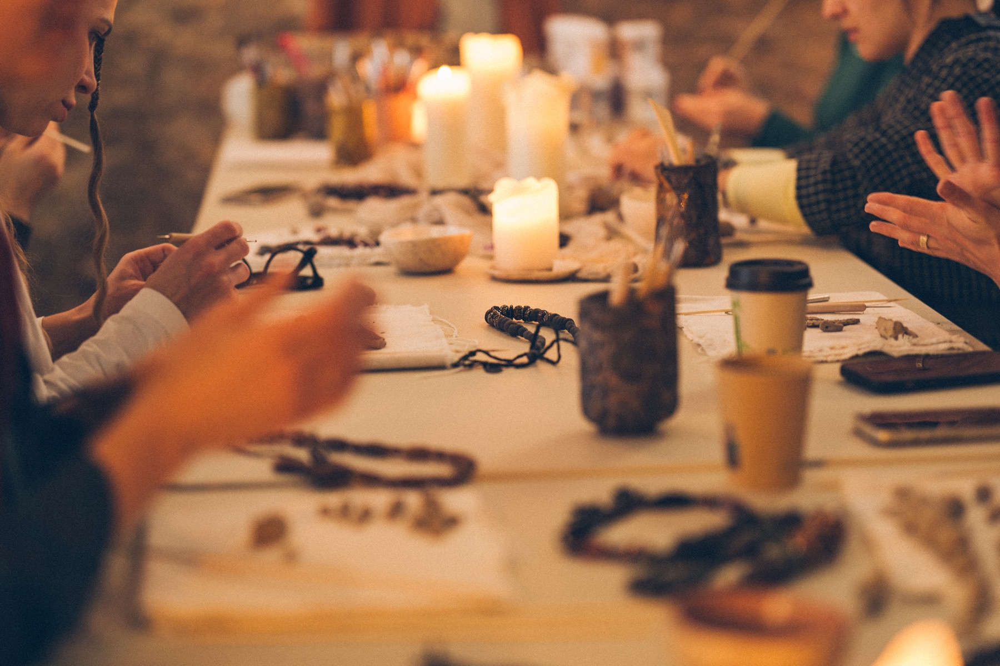
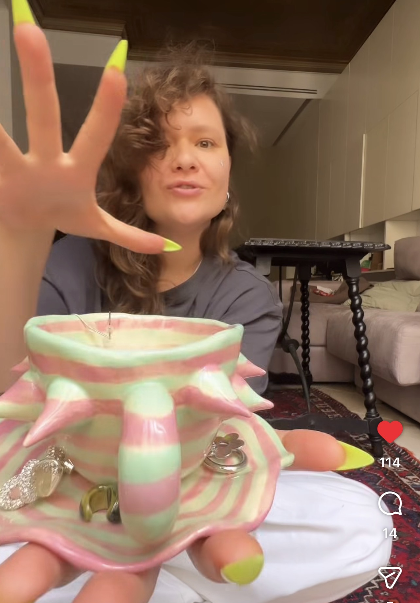
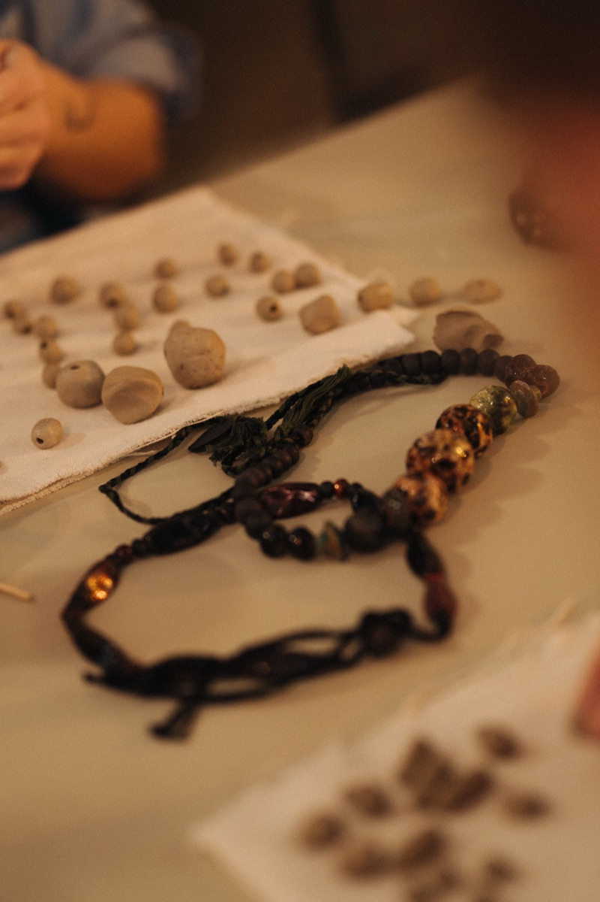
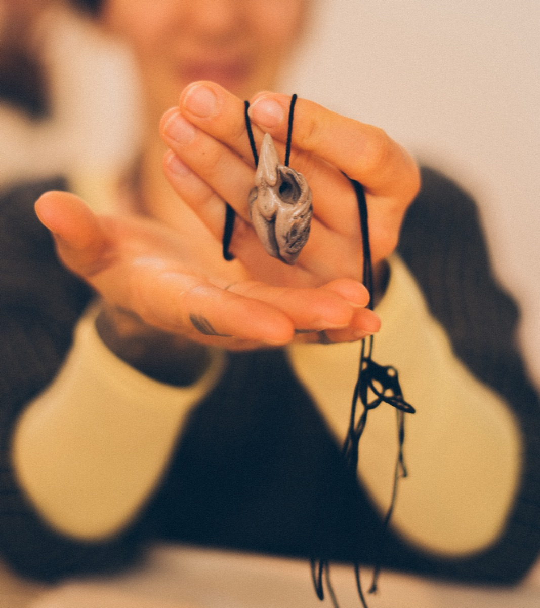
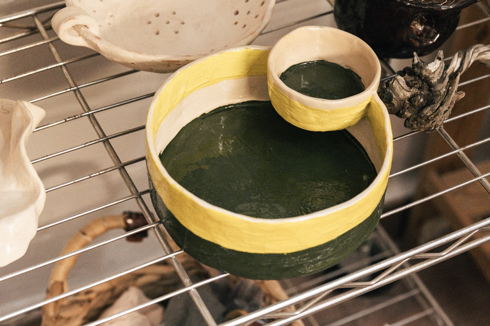

01 · ADULTS
Ceramics
classes
Hand-build, glaze and fire your own piece. Beginners are welcome and materials are included.
A warm studio in Valencia’s old city for clay, curiosity and time shared around the table.

Hand-build, glaze and fire your own piece. Beginners are welcome and materials are included.
Small guided classes where children learn the ceramic process and take their work seriously.

Birthdays, friend gatherings and team sessions shaped around your group.
Ceramic coworking with clay, glazes, kiln access and five quiet places to practise.
Message us before coming. We confirm the language, instructor and available place in the chat.
Slow, tactile hand-building with attention to the material. Korytsia leads children’s classes, family sessions and weekend workshops.

Friendly guided sessions for adults—clear enough for a first experience, open enough to make the piece your own.


